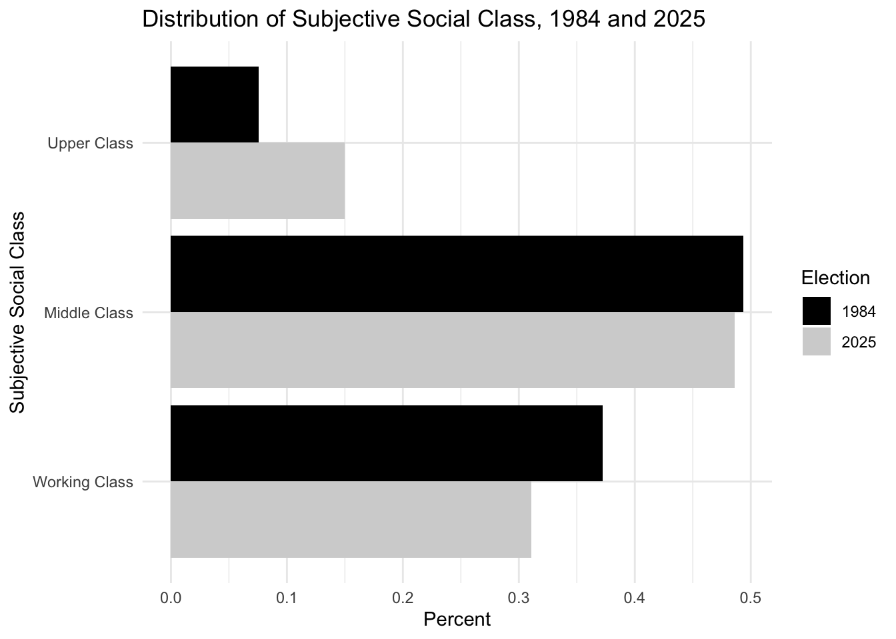
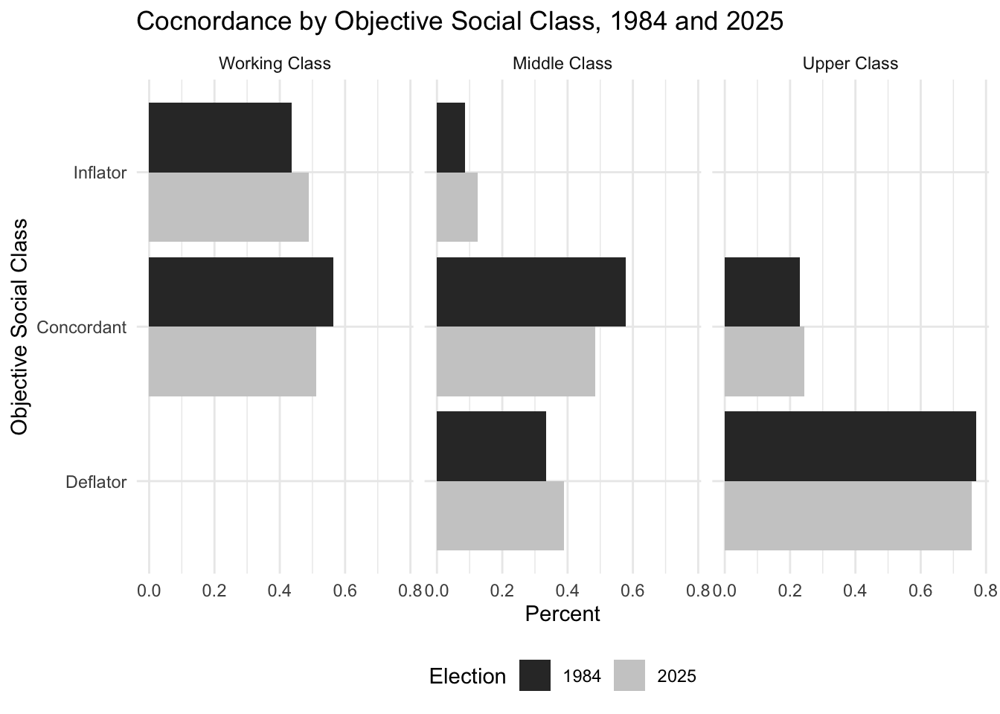
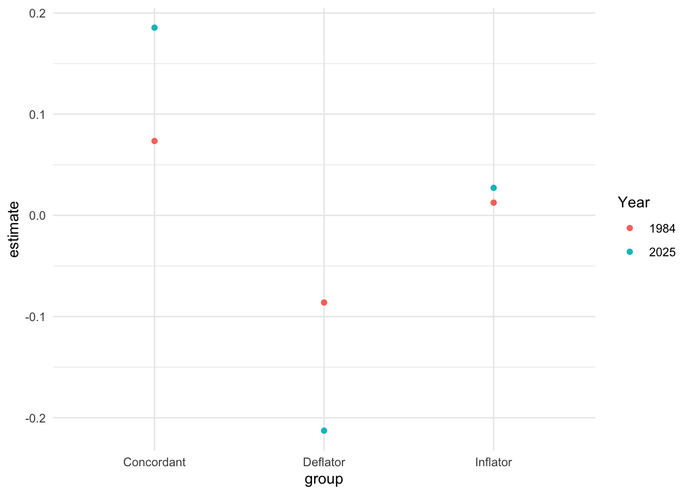

CPSA Summary
Concordance
There is a mixed picture of concordance. There are more objective working class inflators than before but also more objective middle class deflators. Might that be related to housing?

- Rates of concordance have gone down for working and middle class people
- Rates of deflation amongst middle class people have gone up
- Rates of inflation amongst working and middle class people have also gone up
Overall there is a polarization of class sensibilities. These changes are statistically significant. Is this related to housing?
# weights: 9 (4 variable)
initial value 1709.440721
iter 10 value 1440.727762
iter 10 value 1440.727761
final value 1440.727761
converged| Working class (ref: Concordant) | Upper class (ref: Concordant) | |
|---|---|---|
| + p < 0.1, * p < 0.05, ** p < 0.01, *** p < 0.001 | ||
| (Intercept) | -0.255*** | 1.214*** |
| (0.063) | (0.118) | |
| 2025 (ref: 1984) | 0.208 | -0.077 |
| (0.167) | (0.147) | |
| Num.Obs. | 1192 | 1106 |
| Log.Lik. | -817.910 | -606.532 |
| Middle class | ||
|---|---|---|
| Deflator | Inflator | |
| + p < 0.1, * p < 0.05, ** p < 0.01, *** p < 0.001 | ||
| (Intercept) | -0.55*** | -1.90*** |
| (0.07) | (0.12) | |
| 2025 (ref: 1984) | 0.33** | 0.54** |
| (0.11) | (0.18) | |
| Num.Obs. | 1556 | |
Concordance and housing.
# weights: 9 (4 variable)
initial value 1075.541431
iter 10 value 873.075790
final value 873.073602
converged# weights: 9 (4 variable)
initial value 609.729820
final value 532.169597
converged| Working Classs 1984 | Working Classs 2025 | Upper Classs 1984 | Upper Class 2025 | |
|---|---|---|---|---|
| + p < 0.1, * p < 0.05, ** p < 0.01, *** p < 0.001 | ||||
| (Intercept) | -0.42*** | -0.58* | 1.66*** | 1.59*** |
| (0.13) | (0.26) | (0.25) | (0.21) | |
| Ownership | 0.23 | 0.85* | -0.60* | -0.56* |
| (0.15) | (0.33) | (0.28) | (0.23) | |
| Num.Obs. | 1024 | 159 | 406 | 677 |
| RMSE | 0.50 | 0.49 | 0.42 | 0.43 |
| Middle Class 1984 | Middle Class 2025 | |||
|---|---|---|---|---|
| Deflator | Inflator | Deflator | Inflator | |
| + p < 0.1, * p < 0.05, ** p < 0.01, *** p < 0.001 | ||||
| (Intercept) | -0.29* | -1.91*** | 0.41* | -1.20*** |
| (0.12) | (0.22) | (0.17) | (0.27) | |
| Ownership | -0.38* | 0.02 | -0.92*** | -0.19 |
| (0.15) | (0.26) | (0.20) | (0.31) | |
| Num.Obs. | 979 | 555 | ||
| R2 | 0.004 | 0.021 | ||
| R2 Adj. | 0.003 | 0.019 | ||
| RMSE | 0.43 | 0.44 | ||
Call:
multinom(formula = concordance ~ own_rent, data = subset(ces,
obj_class2 == "Middle Class" & election == "1984"))
Coefficients:
(Intercept) own_rentOwn
Deflator -0.2918059 -0.3768901
Inflator -1.9095427 0.0190016
Std. Errors:
(Intercept) own_rentOwn
Deflator 0.1201553 0.1474567
Inflator 0.2187225 0.2582793
Residual Deviance: 1746.147
AIC: 1754.147 
Concordance and Voting
Does this increasing rate of